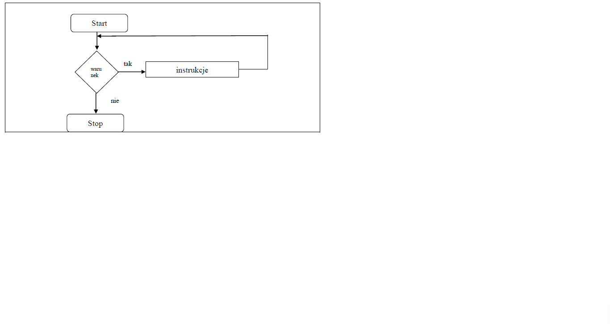

Pętlę typu while jest pętlą z kontrolowanym wejściem tzn.
najpierw jest obliczany warunek a po jego spełnieniu wchodzimy do pętli i wykonujemy instrukcje z niej.
Konstrukcja pętli while wygląda następująco:
